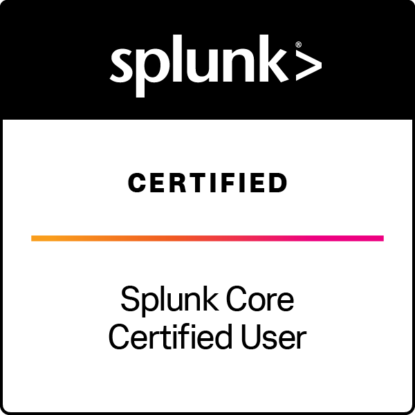
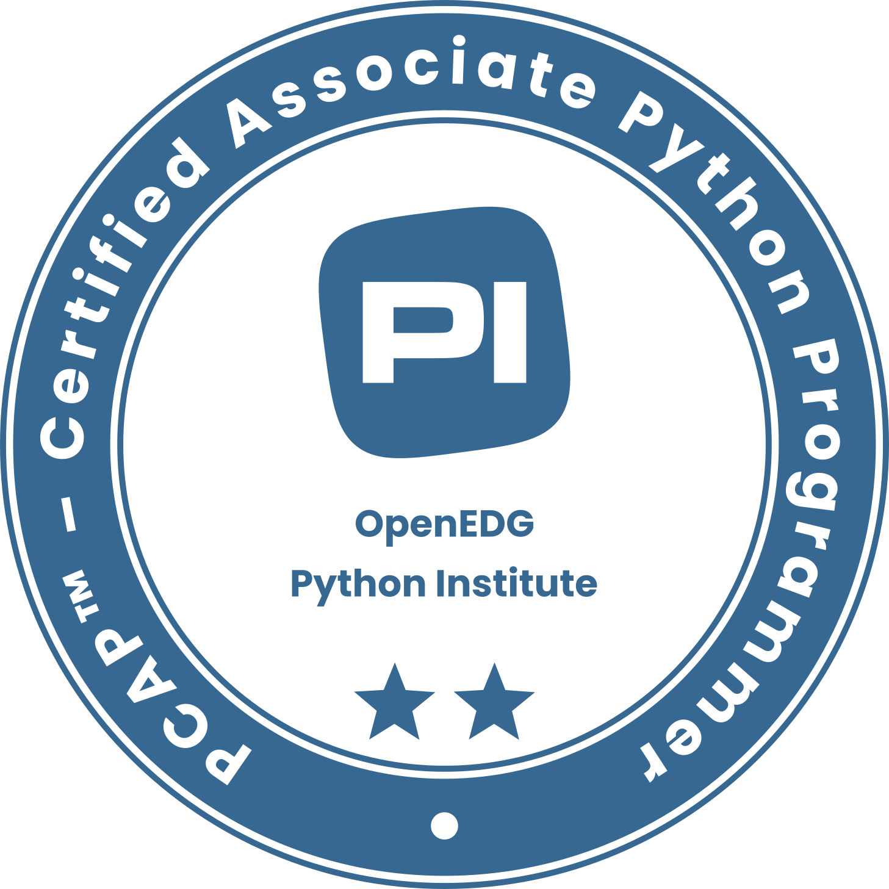
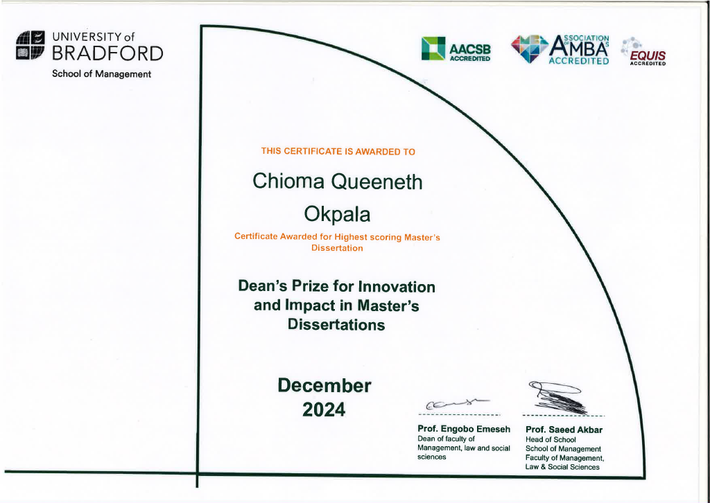

⬡
DevOps & Cloud Engineering
Documented implementations covering Linux, cloud servers, artifact repositories, Docker, container networking and application deployment.
Explore DevOps projects →I work at the intersection of observability, reliability, Python automation and application support — while building and documenting hands-on DevOps and cloud engineering systems.
Explore production engineering experience and hands-on infrastructure projects without having to navigate through one to discover the other.
Documented implementations covering Linux, cloud servers, artifact repositories, Docker, container networking and application deployment.
Explore DevOps projects →Real-world observability, operational automation, applied AI and data engineering projects — including work in business-critical environments.
Explore professional work →Public repositories with implementation steps, architecture, troubleshooting notes and execution evidence.
Custom FastAPI image and three-container application with MongoDB, Mongo Express and Docker bridge networking.
Explore repository ↗Cloud-hosted Nexus setup and Java artifact publishing using Gradle and Maven.
Explore repository ↗Provisioning, SSH administration and application deployment on a cloud-hosted Linux server.
Explore repository ↗Selected work spanning operational observability, synthetic data research and application engineering. Confidential implementations are described at a high level.
Event correlation, anomaly detection and proactive monitoring across live trading operations.
View project overview ↗GAN-based financial data synthesis, with reported 98% statistical alignment and Dean's Prize recognition.
View project overview ↗Data-driven inspection and regulatory workflow application built with Python-based technologies.
View project overview ↗Industry certifications and academic achievements that complement my hands-on engineering experience.

Credential in Splunk search, dashboards, knowledge objects and alerting.
Verify on Credly ↗
Intermediate Python programming, including functions, modules and object-oriented programming.
Verify on Credly ↗
Recognition for the highest-scoring Master's dissertation in the Faculty of Management, Law and Social Sciences.
View award certificate ↗Graduated with Distinction. Academic foundation in applied AI, analytics and data-driven engineering.
Explore related projects ↗